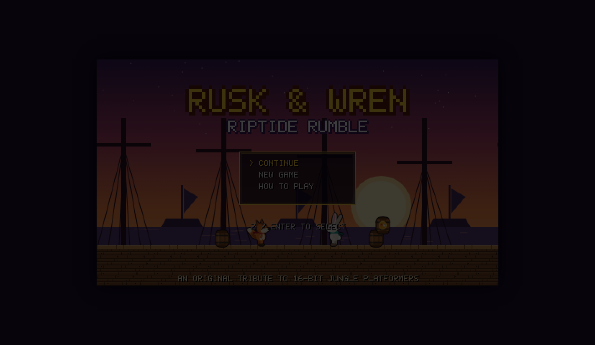

Full-stack delivery
Front end, back end, data, and integrations — whatever an application needs to work end to end.
Full-stack developer · fintech builder
I’m Sir Silos Benet. I build thoughtful web, mobile, and blockchain experiences with an analytical mindset and an eye for the details.
What I bring
I combine product thinking, engineering, and finance experience to make software that feels clear, reliable, and genuinely useful.
Front end, back end, data, and integrations — whatever an application needs to work end to end.
JavaScript, React, React Native, Python, SQL, TensorFlow, and CSS, with a focus on choosing the right tool.
Machine learning, data analysis, charting, technical analysis, and Solidity smart contracts.
Selected work
From accessible study tools to data-heavy platforms and Web3 experiments, each project is an opportunity to make an interaction simpler.

01 / Mobile app
A focused companion for people preparing for the Canadian Citizenship Test, with practice questions, progress tracking, and useful feedback.

02 / Data platform
A multi-platform research tool that tests trading strategies against historical data for the top 50 cryptocurrencies — from MACD and RSI to mean reversion and Bollinger Bands.

03 / Web3
An appointment scheduler where guests book time with the owner through a Solidity-powered payment flow and receive a transaction link by SMS.
Beyond code
Web, mobile, backend, and blockchain solutions designed around business needs.
Budgeting, forecasting, SQL, and big-data work grounded in strong decision-making.
A foundation in financial statements and the operational detail behind the numbers.
Take a break
A few browser projects made for exploring, playing, and learning.
See GitHub Browser game
Browser gameClassic arcade
Take on the classic rally game in your browser. Quick to start, easy to pick up, and perfect for a short break.
Play Pong
New adventure2D platformer
Help Rusk the fox and Wren the bunny cross three worlds to rescue Grampa Tuft from Captain Brimstone’s pirate crew.
Start adventureStart a conversation
Whether you need a product built, a tough problem investigated, or simply want to say hello, I’d love to hear from you.